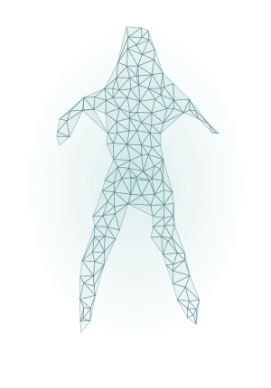
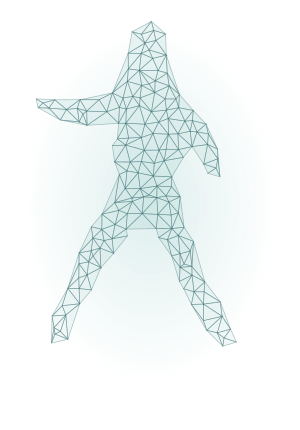
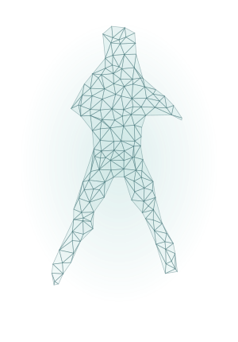
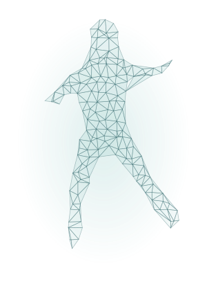

AMovement scale
3D Human Body & Motion Modeling
Computational representations of the person and the movement—designed to support generation, analysis, assessment, and personalized instruction.
We study health-oriented movement across scales, from 3D representations of the moving human body to physiological, biomarker and molecular response.




Our research joins computational models of body and movement with quantitative analysis of health and molecular response.
Computational representations of the person and the movement—designed to support generation, analysis, assessment, and personalized instruction.
Statistical and computational analysis of how movement affects health across physiological, biomarker, metabolic, and molecular levels.
The two research areas converge in a single movement-to-response framework.
Body structure, individual shape, pose and movement.
Movement synthesis, quality, diagnosis and instruction.
Physiology, biomarkers, metabolism and molecular systems.
Mechanisms, heterogeneity and personalized response.
A closed-loop platform that can model a person, adapt movement, evaluate performance, and learn health response over time.
Computational, quantitative, and health perspectives in one collaborative environment.
Professor of Statistics · Department of Statistics · Purdue University
Statistical learning for high-dimensional data: dimension reduction, variable selection, statistical bioinformatics, design of experiments.
Assistant Professor of Practice
Student, Department of Statistics, Purdue University
Department of Statistics, Purdue University
Papers, grants, awards and people from across the lab.
Yan Cong, Jingying Hu, Timothy Reese, Hui Liu. Natural Language Processing Journal 14, 100203.
The award recognizes his development of the STAT 350 Winter Session.
Development of analytical tools integrating external datasets with MoTrPAC data (1R03AG102039); PI Timothy Reese, 2025–2027.
Recognized as an outstanding reviewer for the British Machine Vision Conference.
We model the moving body, measure what movement changes in it, and build the statistical and AI methods that connect the two.
Model a person. Adapt movement. Measure it. Learn the response.
Disciplinescomputer vision · graphics & modeling · biomechanics · statistics & ML · bioinformatics · health science
What exactly is the body doing, and what makes a movement effective?
We build computational representations of the person and of the movement, designed to support generation, analysis, assessment and personalized instruction. The goal is a person-specific digital body: one that can be posed, compared with others and with itself over time, and used to teach. The body comes first, then the movement on it, then the judgement a good teacher would make. Muscle, tendon and dynamic models will later extend the body from geometry to mechanics.
3D shape · joints · anatomical structure
pose · transfer · synthesis · generation
diagnosis · feedback · training
muscle · tendon · dynamic models
Between Body and Motion: recorded movement now drives a parametric body, and we are testing what words and anatomy can define on it.
Optical motion capture of a skilled performer, fitted to an SMPL-X body; beside it, curves computed from the same movement against the range of other performers.
A manuscript in preparation (Zhang, Reese, Zhu) asks how far the WHO standard acupuncture point locations, written in words, pin down a point on a body, and which degrees of freedom they leave open.
What changes biologically, and can movement be personalized?
We study, statistically and computationally, how movement affects health across physiological, biomarker, metabolic and molecular levels. Movement is an intervention, so we ask of it what is asked of a drug: what it changes, by how much, in whom, and through which pathways. Answering that needs repeated measurements over time, many correlated outcomes at once, and designs that support causal claims. The aim is movement that can be prescribed and adapted like a dose.
physiology · clinical measures · biomarkers
metabolism · proteomics · genomics · epigenetics
longitudinal · multivariate · causal
heterogeneous response · prediction
What we will measure, at which scale, and when. The first study is being designed around this picture.
Starting point. The framework is defined; the first study is being designed.
Tai Chi and Qigong combine coordinated whole-body motion, balance, controlled transitions, breathing, attention, repetition, and long-term adaptation.
Represent complex movement with spatial, temporal, and biomechanical detail.
Quantify movement quality, variation, and individual execution.
Link movement characteristics to biomarkers and molecular pathways.
Use biomechanical and biological evidence to adapt movement and training.
Computational, quantitative, and health perspectives in one collaborative environment.
Professor of Statistics
Department of Statistics, Purdue University
Assistant Professor of Practice
Department of Statistics, Purdue University
Lab Manager
Student, Department of Statistics, Purdue University
Ph.D. students (Statistics) and Purdue undergraduates. How to join
Papers, grants, awards and people from across the lab.
Yan Cong, Jingying Hu, Timothy Reese, Hui Liu. Natural Language Processing Journal 14, 100203.
The award recognizes his development of the STAT 350 Winter Session.
Development of analytical tools integrating external datasets with MoTrPAC data (1R03AG102039); PI Timothy Reese, 2025–2027.
Recognized as an outstanding reviewer for the British Machine Vision Conference.
Yuyue Zhang, Timothy Reese, Michael Yu Zhu
Manuscript in preparation, 2026
Yan Cong, Jingying Hu, Timothy Reese, Hui Liu
Natural Language Processing Journal 14, 100203, 2026
H. Xin, M. Y. Zhu
IEEE International Conference on Machine Learning and Applications (ICMLA), 2022
T. Reese, M. Zhu
IEEE ICMLA, 2020
@inproceedings{reese2020lbcnn,
author = {Reese, T. and Zhu, M.},
title = {{LB-CNN}: Convolutional Neural Network with Latent Binarization for Large Scale Multi-class Classification},
booktitle = {IEEE International Conference on Machine Learning and Applications (ICMLA)},
year = {2020},
doi = {10.1109/ICMLA51294.2020.00031}
}Han Wu, Yu B. Zhu
Annals of Applied Statistics 10(3), 2016
W. Zhong, T. Zhang, Y. Zhu, J. S. Liu
Journal of the Royal Statistical Society: Series B 74(5), 849–870, 2012
M. Hu, Y. Zhu, J. M. G. Taylor, J. S. Liu, Z. S. Qin
Bioinformatics 28(1), 63–68, 2012
Z. Sun, Y. Zhu
Bioinformatics 28(20), 2584–2591, 2012
P. Zeng, T. He, Y. Zhu
Journal of Computational and Graphical Statistics 21(1), 92–109, 2012
S. T. Tokdar, Y. Zhu, J. K. Ghosh
Bayesian Analysis 5(2), 319–344, 2010
P. Zeng, Y. Zhu
Journal of Multivariate Analysis 101(2), 271–290, 2010
L. Liu, M. A. Levine, Y. Zhu
Journal of Computational and Graphical Statistics 18(2), 481–504, 2009
Y. Zhu, P. Zeng, K. Jennings
Technometrics 49(4), 440–453, 2007
Y. Zhu, P. Zeng
Journal of the American Statistical Association 101, 1638–1651, 2006
W. Zhong, P. Zeng, P. Ma, J. S. Liu, Y. Zhu
Bioinformatics 21(22), 4169–4175, 2005
X. Lin, C. Clifton, M. Zhu
Knowledge and Information Systems 8(1), 68–81, 2005
Y. Zhu
Annals of Statistics 31(3), 2003
Full lists on Google Scholar: Michael Yu Zhu ↗ · Timothy Reese ↗ · Yuyue Zhang ↗
Photogrammetry-based 3D human capture: multi-view video to a clean mesh with COLMAP, optionally registered to SMPL-X.
Timothy Reese
Public · MIT
We welcome students and collaborators across computer science, statistics, biomechanics, bioinformatics, molecular biology, and health science.
Professor of Statistics · MATH 238
Assistant Professor of Practice · MATH 210
Lab Manager
Department of Statistics, Purdue University
150 N. University Street, West Lafayette, IN 47907